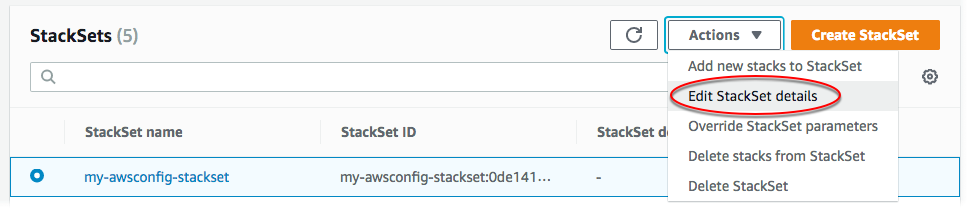

Die vorliegende Übersetzung wurde maschinell erstellt. Im Falle eines Konflikts oder eines Widerspruchs zwischen dieser übersetzten Fassung und der englischen Fassung (einschließlich infolge von Verzögerungen bei der Übersetzung) ist die englische Fassung maßgeblich.
Aktualisieren des Stack-Sets
Sie können Ihr Stack-Set entweder in der AWS Management Consoleoder mithilfe von AWS CloudFormation Befehlen in der aktualisieren AWS CLI. Im Rahmen dieser Anleitung ändern wir die Häufigkeit der Übermittlung von Standard-Snapshots für die Konfiguration des Übermittlungskanals von 24hours auf 12hours.
Informationen zum Überschreiben der Parameterwerte für bestimmte Stack-Instances finden Sie unter Überschreiben von Parametern auf Stack-Instances.
Themen
Aktualisieren Ihres Stack-Sets mithilfe der AWS CloudFormation -Konsole
Öffnen Sie die - AWS CloudFormation Konsole unter https://console.aws.amazon.com/cloudformation
. -
StackSets.
-
Wählen Sie auf der StackSets Seite das Stack-Set aus, das Sie in erstellt habenErstellen eines Stack-Sets. Im Rahmen dieser Anleitung haben wir ein Stack-Set mit der Bezeichnung
my-awsconfig-stackseterstellt. -
Wählen Sie bei ausgewähltem Stack-Set im Menü Aktionen die Option Details bearbeiten StackSet aus.
 -
Bestimmen Sie auf der Seite Choose a template (Vorlage auswählen), ob Sie die aktuelle Vorlage aktualisieren, eine S3-URL für eine andere Vorlage angeben oder eine neue Vorlage in AWS CloudFormationhochladen möchten. Im Rahmen dieser Anleitung verwenden wir die aktuelle Vorlage. Wählen Sie Use current template (Aktuelle Vorlage verwenden) und dann Next (Weiter) aus.
-
Ändern Sie auf der Seite StackSet Details angeben Parameterwerte und geben Sie Bereitstellungsziele an.
-
[Selbstverwaltete Berechtigungen] Wählen Sie für Deployment targets (Bereitstellungsziele) die Option Deploy stacks in accounts (Stacks in Konten bereitstellen) aus. Fügen Sie Ihre Zielkonto-Zahlen in das Textfeld ein und trennen Sie dabei die einzelnen Zahlen durch Kommas.
[Serviceverwaltete Berechtigungen] Wählen Sie für Deployment targets (Bereitstellungsziele) die Konten in Ihrer Organisation für die Bereitstellung aus.
-
Wählen Sie die Region.
-
Ändern Sie den Wert des Frequency (Frequenz)-Parameters von 24hours (24 Stunden) auf 12hours (12 Stunden).
Weitere Informationen zu diesem und den anderen Parametern, die Werte angeben, die von verwendet werden AWS Config, finden Sie unter Einrichten von AWS Config mit der Konsole im AWS Config -Entwicklerhandbuch.
Führen Sie keine Änderungen an den anderen Parametern durch. Für die Zwecke dieser Anleitung verzichten wir auf das Konfigurieren von Amazon SNS-Aktualisierungen.
Klicken Sie auf Weiter, wenn Sie fertig sind.
-
-
Auf der Seite StackSet Optionen konfigurieren sind keine Änderungen erforderlich, aber Sie können hier bei Bedarf neue Tags aktualisieren, löschen oder hinzufügen. Weitere Informationen zur Verwendung von Tags in AWSfinden Sie unter Verwenden von Kostenzuordnungs-Tags im AWS Billing and Cost Management -Benutzerhandbuch. Sie können die Ausführungskonfiguration auch verwalten, um anzugeben, ob widersprüchliche Vorgänge gleichzeitig StackSets ausführt und widersprüchliche Vorgänge in die Warteschlange stellt. Nach Abschluss widersprüchlicher Vorgänge StackSets startet Operationen in der Warteschlange in der Reihenfolge der Anforderungen.
Anmerkung
Wenn bereits laufende oder in die Warteschlange gestellte Vorgänge vorhanden sind, stellt alle eingehenden Vorgänge in die StackSets Warteschlange, auch wenn sie nicht widersprüchlich sind.
Sie können die Ausführungskonfiguration Ihres Stack-Sets nicht ändern, solange für dieses Stack-Set laufende oder in die Warteschlange gestellte Vorgänge laufen.
Lassen Sie Permissions (Berechtigungen) unverändert und wählen Sie Next (Weiter).
-
Behalten Sie auf der Seite Set deployment options (Bereitstellungsoptionen festlegen) den Standardwert 1 und By number (Nach Anzahl) für die Angabe Maximum concurrent accounts (Maximale parallele Konten) bei. Lassen Sie im Feld Failure tolerance (Fehlertoleranz) den Standardwert 0 stehen und behalten Sie die Standardoption By number (Nach Anzahl) bei. Wählen Sie Weiter aus.
Anmerkung
Sie können Konten und Regionen hier nicht ändern, d. h., Sie können Stack-Set-Änderungen nicht für Stacks in einigen Konten und Regionen, aber nicht in anderen, bereitstellen.
-
Überprüfen Sie Ihre Auswahl und die Eigenschaften Ihres Stack-Sets auf der Seite Review. Um Änderungen vorzunehmen, wählen Sie Edit (Bearbeiten) in der oberen rechten Ecke des Bereichs, in dem Sie Eigenschaften ändern möchten. Bevor Sie das Stack-Set aktualisieren können, müssen Sie das Kontrollkästchen im Bereich Capabilities (Funktionalitäten) markieren. Sie erkennen damit an, dass einige der Ressourcen, die Sie mit dem Stack-Set aktualisieren, unter Umständen neue IAM-Ressourcen und Berechtigungen erfordern. Weitere Informationen zu potenziell erforderlichen Berechtigungen finden Sie unter Bestätigung von IAM-Ressourcen in - AWS CloudFormation Vorlagen in diesem Handbuch. Wenn Sie bereit sind, Ihr Stack-Set zu erstellen, wählen Sie Submit (Einsenden).
AWS CloudFormation beginnt mit der Anwendung Ihrer Updates auf Ihr Stack-Set und zeigt die Registerkarte Vorgänge der Detailseite des Stack-Sets an
-
Sie können Fortschritt und Status der Aktualisierungsoperationen auf der Registerkarte Operations (Operationen) anzeigen. Sie sollten den aktualisierten Frequency-Parameter auf der Registerkarte Parameter sehen.
Aktualisieren Ihres Stack-Sets mithilfe der AWS CLI
Wenn Sie als delegierter Administrator agieren, müssen Sie den Parameter --call-as jedes Mal auf DELEGATED_ADMIN festlegen, wenn Sie einen StackSets-Befehl ausführen.
--call-asDELEGATED_ADMIN
Führen Sie den update-stack-set AWS CLI Befehl aus, um Änderungen an Ihrem Stack-Set vorzunehmen. Im Rahmen dieser Anleitung aktualisieren wir den Wert des Parameters MaximumExecutionFrequency. Weitere Informationen zu den Parameternamen und -werten für das Erstellen oder Aktualisieren einer AWS Config Regel finden Sie unter put-config-rule in der AWS CLI -Referenz. Wenn Sie die Parameterwerte der Vorlage ändern möchten, fügen Sie den Parameter --parameters hinzu. Weitere Informationen darüber, was Sie als Wert für angeben können--parameters, finden Sie unter Parameter in der AWS CloudFormation -API-Referenz und update-stack in der AWS CLI -Befehlsreferenz.
Im hier gezeigten Beispielbefehl aktualisieren wir das Stack-Set mithilfe von --parameters. Insbesondere ändern wir die Standardhäufigkeit der Snapshot-Übermittlung für die Konfiguration des Übermittlungskanals von TwentyFour_Stunde auf Twelve_Hours. Da wir immer noch die aktuelle Vorlage verwenden, fügen wir den Parameter --use-previous-template hinzu.
-
Führen Sie den folgenden Befehl aus. Geben Sie unter
stack set name (Stack-Set-Name)den Stack-Set-Namenmy-awsconfig-stacksetan.Legen Sie die Fehlertoleranz und die maximale Anzahl gleichzeitiger Konten fest, indem Sie im Parameter
FailureToleranceCountwie im folgenden Beispiel den Wert für0aufMaxConcurrentCountund für1auf--operation-preferencesfestlegen. Wenn Sie stattdessen Prozentwerte sehen möchten, verwenden SieFailureTolerancePercentageoderMaxConcurrentPercentage. Für die Zwecke dieser Anleitung verwenden wir die Anzahl und keine Prozentwerte.Anmerkung
Der Wert von
MaxConcurrentCounthängt vom Wert vonFailureToleranceCountab.MaxConcurrentCountist höchstens eins mehr alsFailureToleranceCount.[Selbstverwaltete Berechtigungen] Geben Sie die Konto-IDs an, die Sie als Ziel für Ihr Update verwenden möchten.
aws cloudformation update-stack-set --stack-set-namemy-awsconfig-stackset--use-previous-template --parameters ParameterKey=MaximumExecutionFrequency,ParameterValue=TwentyFour_Hours\\,Twelve_Hours--operation-preferencesFailureToleranceCount=0,MaxConcurrentCount=1--accounts '["account_ID_1","account_ID_2"]'[Serviceverwaltete Berechtigungen] Geben Sie die Organisations-(Stamm-)ID, OU-IDs oder AWS Organizations-Konto-IDs an, auf die Ihre Aktualisierung abzielen soll.
aws cloudformation update-stack-set --stack-set-namemy-awsconfig-stackset--use-previous-template --parameters ParameterKey=MaximumExecutionFrequency,ParameterValue=TwentyFour_Hours\\,Twelve_Hours--operation-preferencesFailureToleranceCount=0,MaxConcurrentCount=1--deployment-targets OrganizationalUnitIds='["ou-rcuk-1x5j1lwo", "ou-rcuk-slr5lh0a"]' --regions '["eu-west-1"]' -
Überprüfen Sie, ob das Stack-Set erfolgreich aktualisiert wurde, indem Sie den Befehl
describe-stack-set-operationausführen, um den Status und die Ergebnisse der Aktualisierung anzuzeigen. Verwenden Sie als--operation-iddie Operations-ID, die durch den Befehlupdate-stack-setzurückgegeben wurde.aws cloudformation describe-stack-set-operation --operation-idoperation_ID